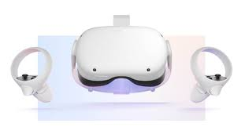
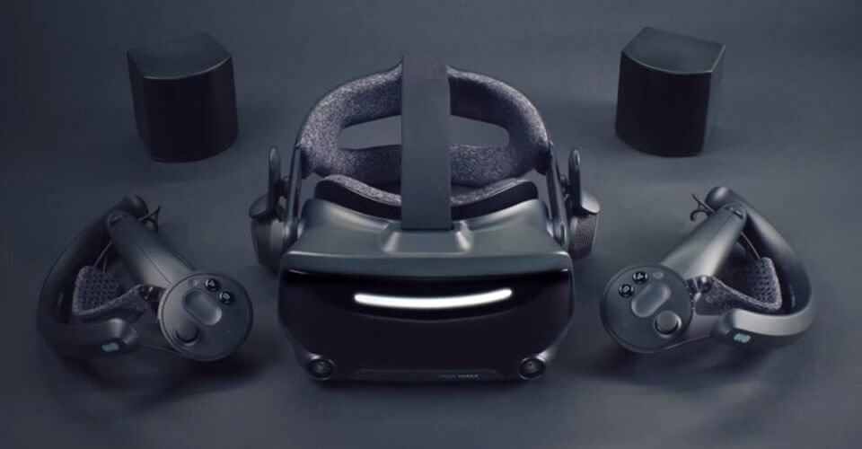
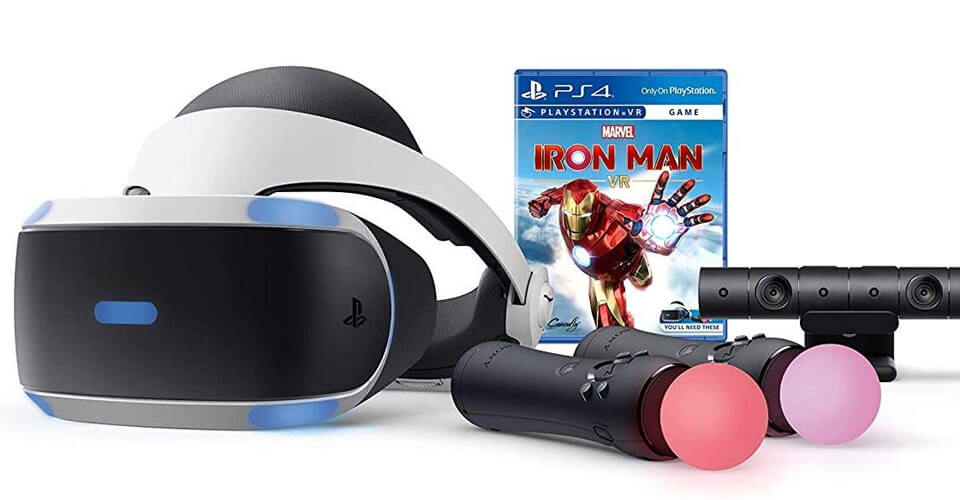

COMPARACION DE MODELOS
- Oculus Quest 2
- Valve Index
- PlayStation VR
- HTC Vive Flows
Costo: $299 dólares
Resolución: 1832 x 1920
Compatible con: Oculus Store y también se puede conectar a una computadora.
Este es uno de los lentes de realidad virtual más populares, ya que no requiere cables para funcionar y cuenta con una gran variedad de aplicaciones que puedes disfrutar: desde rutinas de ejercicio y transmisión de eventos hasta videojuegos. También te permite conectarte y socializar con otros usuarios de Oculus. También se puede conectar a una computadora pc para aumentar el contenido al cual puedes acceder.

Costo: $999 dólares
Resolución: 1440 × 1600
Compatible con: Computadora mediante Steam VR
Este dispositivo es uno de los más caros en el mercado, con un costo de $999 dólares. Sin embargo, para aquellos que puedan pagarlo ofrece una calidad de inmersión y realismo bastante alta. Y aunque los lentes de realidad virtual incluyen bocinas integradas, pueden también resultar algo pesadas de usar tras un rato. Se conecta a tu computadora mediante Steam VR y se ajusta de acuerdo a las capacidades de tu equipo.

Costo: $350 dólares
Resolución: 960 x 1080
Compatible con: PlayStation 4 y 5
Para aquellos que ya tengan una consola PlayStation 4 o 5, esta es la opción ideal para dar el siguiente paso y llegar a un nuevo nivel de entretenimiento. Además posee una librería exclusiva de videojuegos, tales como Resident Evil 7, Star Wars Battlefront: Rogue One X-Wing Mission, Eve: Valkyrie y Batman: Arkham VR. Los lentes de realidad virtual integran audio 3D y un micrófono, aunque se requiere el uso de la PlayStation Camera para mayor precisión.

Costo: $499 dólares
Resolución: 1600 x 1600
Compatible con: Celulares Android